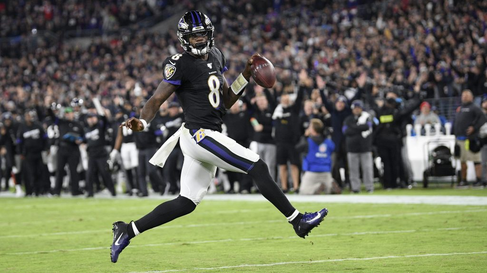
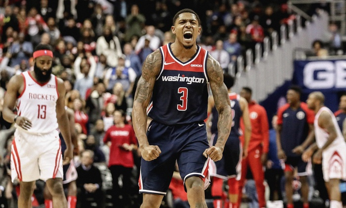

As a child, I wanted nothing more than to do everything that my three older brothers did and sports were not an exception. My brother started taking karate classes, so I had to take karate classes. He then joined a rec baseball team, so of course I had to join a rec baseball team. You get the gist.
Football
Throughout my childhood, football was a huge part of my home life. I would play catch with my brothers most days or we'd play a pick up game with some kids in the neighborhood.
During the NFL season, we would all sit on front of the TV every Sunday afternoon and watch our hometown Baltimore Ravens.
Present day, I still tune in most Sundays during the season, but a lot of the passion I had for the sport in my youth has subsided
Basketball
The sport of basketball is something that I didn't develop a passion for until early adulthood.
Up until then, I would play the occasional game of 50 or 2-on-2, but I was never passionate about it or cared to follow the NBA.
My first year of college, however, I met a love interest who loved basketball and the NBA and so I tried following it myself That's when I discovered my (close to) hometown Washington Wizards and became completely enamored with the sport and its league.
Today, I follow the Wizards and the league as a whole religiously and play pick up games whenever I have the time and the people to do so with.